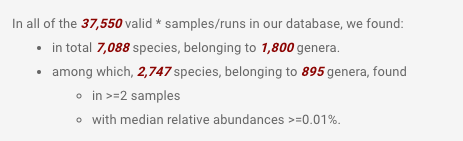
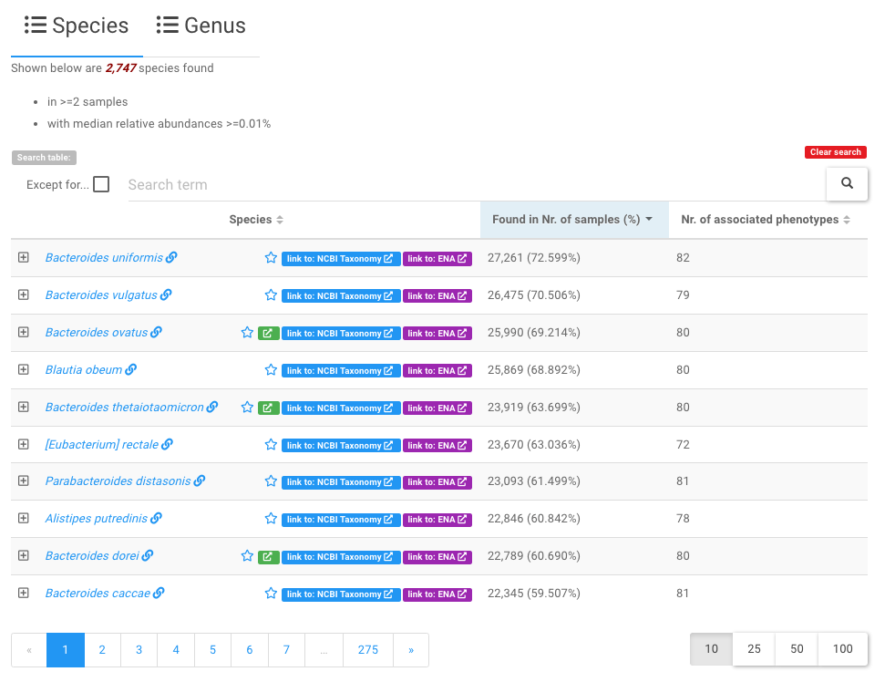
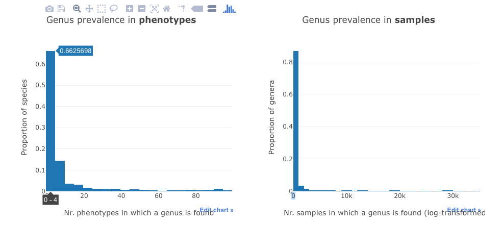
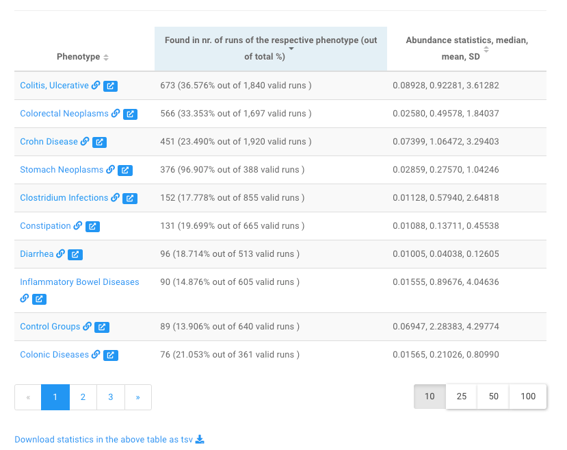
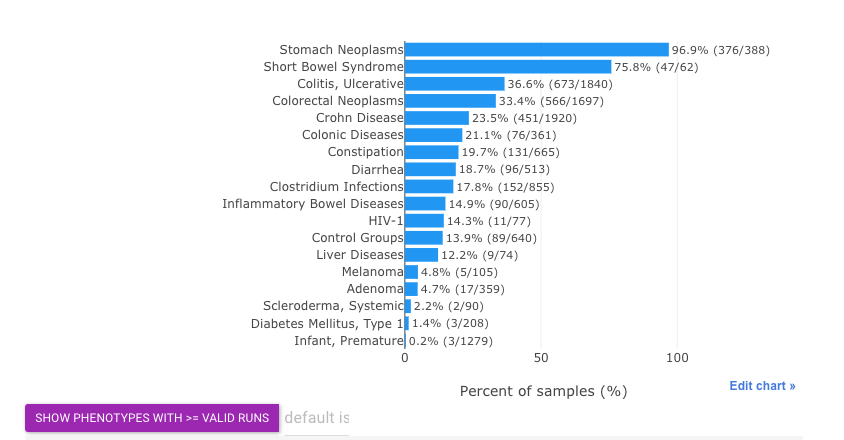
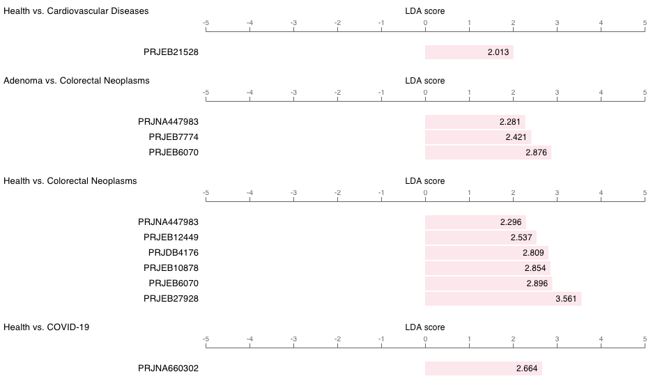

Gut microbe centric pages¶
Similar to disease centric pages , there are two types of gut microbe centric webpages , i.e., the information are organized around the microbe(s), including:
-
the gut microbes page that lists all gut microbes identified in the qualified samples collected in GMrepo,
-
the single taxon page that lists its associated diseases and distributions across diseases. If a taxon is a disease marker, the relavent information will also be included.
These pages will be described in details below.
All gut microbes ¶
This page lists all gut microbes at species and genus levels included in GMrepo. It consists three sections.
1. Overview¶
This part provides simple statistics on the gut microbes collected in our database, for example:

2. Lists of all gut microbes¶
This part contains two data tables that list all gut microbes at species and genus levels respectively, and their associated phenotypes (i.e., diseases and health).

Users can click any of the taxa to view all relavent informatin of the taxon in our database in more details .
Tip
- Because there are so many identified species (genera), this table lists a subset of which that are found in two and more samples with median relative abundances >=0.01%;
- Users can use the widgets above the data table to search and filter the contents of the table. For example, users can enter a search term
Bacteroidesto find all species that contains Bacteroides in their names.
Note
- a star symbol next to taxon names indicates marker taxon, which shows signficantly differential abundances between two phenotype types, e.g. health vs. disease. See the marker taxon page for details.
3. Statistics on taxon prevalence in phenotypes and samples¶
This part contains two histograms.
The first shows the distribution of the taxa in the phenotypes, while the second shows distribution of all the taxa in the samples.

For example, the first bar in the left panel means that about 66% of all species are found in four or less (0-4) phenotypes.
Detailed information on a specific taxon¶
This webpage contains almost all information on a taxon in our database, including:
- its association with dieases,
- its prevalence and abundances across diseases,
- whether it is a marker, in how many diseases it serves as a marker and its trends (i.e., enrichment and depletion) in diseases and healthy controls.
Here we use Fusobacterium nucleatum as an example to show the contents of this page.
1. Overview¶
This part summarises very briefly the number of runs in which Fusobacterium nucleatum can be found, and the number phenotypes (diseases and health) it associated with.
It also includes links to external databases, including
- NCBI taxonomic database , and
- MVP database for phage and bacterium associations (if there is any).
2. Stats on associated phenotypes¶
This part contains a table and a barplot.
The table lists the associated diseases and the prevalence of Fusobacterium nucleatum in the corresponding disease-associated samples.

Users can click a disease name, e.g., Crohn Disease to view more information on gut microbes associated with the disease in our database .
The barplot shows basically the same statistics:

Tip
- By default, phenotypes with more than
50 valid runswill be included in this barplot. - Users may increase/decrease this threshold using widgets above.
- Here
prevalenceis defined as percentage of runs in which current taxon is present (w/ relative abundance >= 0.01%) out of valid runs.
3. Relative abundances of the taxon in different diseases and healthy samples¶
The relative abundances of the taxon across diseases and health are shown in:
- a density plot, and
- a boxplot.
See here for an example .
4. Marker taxon¶
Note
The markers are identified on per-project basis, and between
-
either a disease and health (e.g., colorectal cancer (CRC) vs. healthy controls),
-
or different stages of the same disease (e.g., CRC and adenoma).
In GMrepo, marker information in this microbe-centric page are presented using a table and a barplot.
As shown below is the barplot view of Fusobacterium nucleatum as a marker taxon :

Note
- From this plot we can see that
F. nucleatumhas been identified as a marker in many diseases; - It shows consistent enrichment in diseases as compared with healthy controls, and in more advanced disease stages (e.g., adenoma vs. CRC);
- It also shows consistent trend in multiple projects related to the same disease (e.g., Colorectal Neoplasms (CRC)).